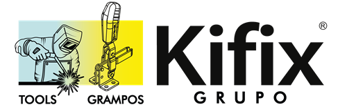

Kifix
Líder em grampos rápidos manuais e pneumáticos. A RECOM® é o parceiro comercial para dispositivos de fixação Kifix em Campinas e região.
O que a Kifix resolve na sua produção
Grampos rápidos que permitem fixar e soltar peças em segundos, otimizando linhas de montagem.
Mecanismos projetados para manter a pressão constante, evitando deslocamentos acidentais.
Linhas completas de grampos pneumáticos para integração em células robotizadas e dispositivos automáticos.
Linhas em Destaque
Grampos Manuais
Modelos verticais, horizontais e de tração para diversos tipos de dispositivos de fixação.
Grampos Pneumáticos
Soluções para alta produtividade com acionamento à distância e integração industrial.
Acessórios de Fixação
Ponteiras, suportes e braços de extensão para customização da força e alcance do grampo.
Catálogo Kifix
Acesse a linha completa de grampos e dispositivos:
Como cotar itens Kifix
Para agilizar sua consulta via RECOM®, informe:
- Modelo ou Referência: Ex: Grampo 201-B, 305-H.
- Tipo de Acionamento: Manual ou Pneumático.
- Força Necessária: Capacidade de carga estimada para a fixação.
- Quantidade: Para definição de condições comerciais.